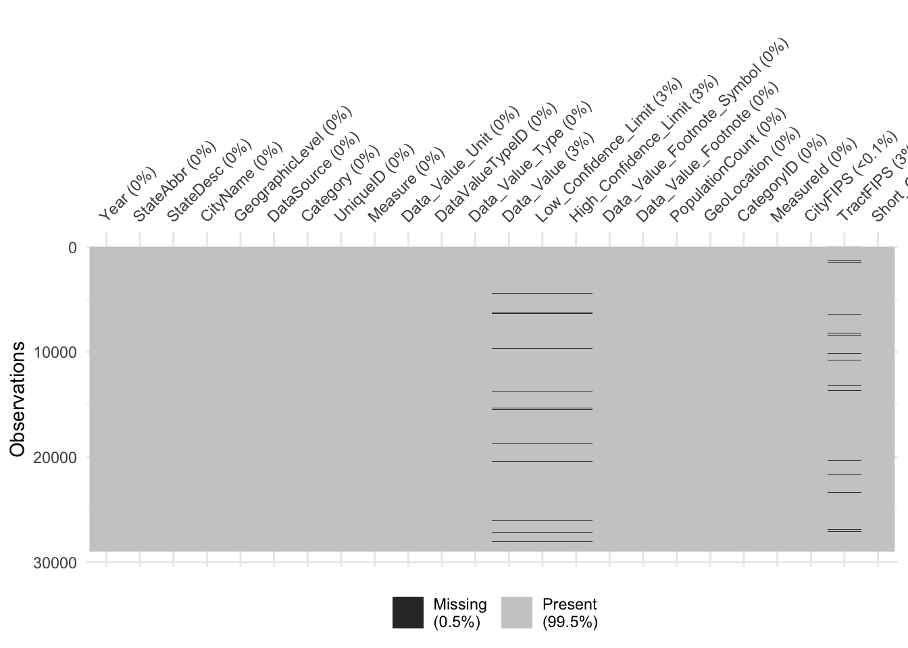

The data, 500 Cities: Binge drinking among adults aged >= 18, is from the Center of Disease Control and Prevention (CDC), which is a United States federal agency within Health and Human Services. It specifically represents the percentage of adults that partake in binge drinking in 500 US cities. While it is a study of 500 cities, there are more than just 500 unique identifiers in the data. This is because, each city is divided into a more specific Census Tract if relevant, so there could be multiple rows representing different parts of the same city, however there will not be any overlap in boundries. There are over 28,000 unique areas in the data. The sources of data used were based on government data collection methods, including the Behavioral Risk Factor Surveillance System in 2017, 2010 Census, and American Community Survey 2013-2017 estimates. This data specifically uses the Behavorial Risk Factor Surveillance System. Each of these estimates are federally funded projects used to gather data on the US population. Specifically, these use exact measures for locations that can be uniform and therefore combined to form the dataset. Each method of collection occurs at a relatively frequent basis. The specific project for the data is the 500 Cities project in 2017. The binge drinking data is just a subset of this larger dataset that was compiled by the CDC. The data provides estimates for crude or age-adjusted percentage of adults that partake in binge drinking. The percentage is based on the locality population size. The data is not updated until a more recent study is performed.
The data is in tabular form, where each row’s unique identifier is the Unique Id, which is the census level region. Other columns include geographic columns like State, City, type of geological indicator (City or Tract), and GeoLocation. Many columns are not useful since it a subset of a larger dataset. These include Year, DataSource, Category, as well as some others. These are all the same for all rows as it was the way they could be filtered from the original data. For example, the year for all the data is 2017. The main column of data that will be the focus is the DataValue column. This is the percent of the population that partakes in binge drinking. The Data_Value_Type column indicates where the data value is the crude prevalence or age adjusted prevalence. The crude prevalence is used in most of the rows. The prevalence confidence interval is also given as it is an estimate. The population for each area is also available in the data set. There are 29,006 rows. There are 24 columns, yet about half will be removed due to repeated information. There is a column that notes that the data is suppressed for the prevalence due to the population being too small to make an estimate.
The research plan is to visualize the prevalence of binge drinking. To do this, geographical data can be used for this visualization. Prevalence of adults that binge drink will be the target variable on the visualizations. Since there is a large amount of geographical data, including mapping of the prevalence can be done. A map colored with a continuous color pallet based on prevalence of binge drinking would be an important visualization to identify nationwide trends. This map can be done both on the local level and on a statewide level. The data is able to create these maps because geographic data is present as well as exact coordinates for each row. This will allow the research and exploration to be completed in a mapping format. Additionally, trends on a larger scale can be done by categorizing each place as a one of the four regions in the US (West, Midwest, Northeast, South) and plotting different visuals like bar charts, histograms, and boxplots. Futhermore, error bars can be added because the confidence intervals for binge drinking exists in the data. Since there is so much data, an interactive visual can be used for mapping and labeling the localities so that they pop up when hovered over. This will allow for understanding what is happening with drinking on the local level. Additionally, this gives way to allow for layering of other important features, for example adding information about where universities are located. These visualizations will aid in the research question as they are able to identify any trends relating to geography and binge drinking. A graphs comparing population sizes and binge drinking percentages can be made to identify if the hypothesis about small towns having higher rates of drinking is accurate. Additionally layering climate related data on the map with binge drinking can identify correlations with rates of heavy drinking and worse temperatures.
2.3 Missing value analysis
Code
library(dplyr)
Attaching package: 'dplyr'
The following objects are masked from 'package:stats':
filter, lag
The following objects are masked from 'package:base':
intersect, setdiff, setequal, union
Code
library(redav)drink =read.csv('500_Cities__Binge_drinking_among_adults_aged___18_years.csv')#renaming columns to Lettersdrink_rename <- drink |>rename('A'=Year,'B'=StateAbbr,'C'=StateDesc,'D'=CityName,'E'=GeographicLevel,'F'=DataSource,'G'=Category,'H'=UniqueID,'I'=Measure,'J'=Data_Value_Unit,'K'=DataValueTypeID,'L'=Data_Value_Type,'M'=Data_Value,'N'=Low_Confidence_Limit,'O'=High_Confidence_Limit,'P'=Data_Value_Footnote_Symbol,'Q'=Data_Value_Footnote,'R'=PopulationCount,'S'=GeoLocation,'T'=CategoryID,'U'=MeasureId,'V'=CityFIPS,'W'=TractFIPS,'X'=Short_Question_Text)plot_missing(drink_rename)
Scale for y is already present.
Adding another scale for y, which will replace the existing scale.
Scale for y is already present.
Adding another scale for y, which will replace the existing scale.
Missing values exist in the data set and are in 3 main patterns. Tract FIPS and City FIPS are missing together in rare occasions and Tract FIPS is missing in a small percent of rows. Data value and their respective confidicent intervals are missing together.
Similar trends can be seen when looking at a heatmap of the missng values in the dataset.
Code
library(ggplot2)library(naniar)vis_miss(drink)

We can see that for 3% of the data, we have missing values for the binge drinking percentage alongside their respective confidence intervals. Sub-setting the data shows us the reason.
Year StateAbbr StateDesc CityName GeographicLevel DataSource
1 2017 NC North Carolin Greensboro Census Tract BRFSS
2 2017 AL Alabama Huntsville Census Tract BRFSS
3 2017 AL Alabama Tuscaloosa Census Tract BRFSS
4 2017 AL Alabama Tuscaloosa Census Tract BRFSS
5 2017 AZ Arizona Gilbert Census Tract BRFSS
6 2017 AZ Arizona Avondale Census Tract BRFSS
Category UniqueID
1 Unhealthy Behaviors 3728000-37081015600
2 Unhealthy Behaviors 0137000-01089011100
3 Unhealthy Behaviors 0177256-01125010103
4 Unhealthy Behaviors 0177256-01125012503
5 Unhealthy Behaviors 0427400-04013422638
6 Unhealthy Behaviors 0404720-04013723304
Measure Data_Value_Unit DataValueTypeID
1 Binge drinking among adults aged >=18 Years % CrdPrv
2 Binge drinking among adults aged >=18 Years % CrdPrv
3 Binge drinking among adults aged >=18 Years % CrdPrv
4 Binge drinking among adults aged >=18 Years % CrdPrv
5 Binge drinking among adults aged >=18 Years % CrdPrv
6 Binge drinking among adults aged >=18 Years % CrdPrv
Data_Value_Type Data_Value Low_Confidence_Limit High_Confidence_Limit
1 Crude prevalence NA NA NA
2 Crude prevalence NA NA NA
3 Crude prevalence NA NA NA
4 Crude prevalence NA NA NA
5 Crude prevalence NA NA NA
6 Crude prevalence NA NA NA
Data_Value_Footnote_Symbol Data_Value_Footnote
1 * Estimates suppressed for population less than 50
2 * Estimates suppressed for population less than 50
3 * Estimates suppressed for population less than 50
4 * Estimates suppressed for population less than 50
5 * Estimates suppressed for population less than 50
6 * Estimates suppressed for population less than 50
PopulationCount GeoLocation CategoryID MeasureId CityFIPS
1 1 (36.1909973664, -79.7508893589) UNHBEH BINGE 3728000
2 4 (34.678659986, -86.6942482318) UNHBEH BINGE 137000
3 13 (33.4037171009, -87.5950158306) UNHBEH BINGE 177256
4 5 (33.1448113269, -87.5293125395) UNHBEH BINGE 177256
5 4 (33.3818684313, -111.716815189) UNHBEH BINGE 427400
6 13 (33.3198366954, -112.330920794) UNHBEH BINGE 404720
TractFIPS Short_Question_Text
1 37081015600 Binge Drinking
2 1089011100 Binge Drinking
3 1125010103 Binge Drinking
4 1125012503 Binge Drinking
5 4013422638 Binge Drinking
6 4013723304 Binge Drinking
We can see that every single element that has missing values in the data value has “Estimates suppressed for population less than 50” in its footnote, making the missingness type MAR, since it depends on the population count column.
A similar trend arises for the TractFIPS column.
Code
x = drink %>%filter(is.na(TractFIPS))head(x)
Year StateAbbr StateDesc CityName GeographicLevel DataSource
1 2017 CA California Indio City BRFSS
2 2017 CA California Antioch City BRFSS
3 2017 CA California Chino City BRFSS
4 2017 CA California Fullerton City BRFSS
5 2017 CA California Merced City BRFSS
6 2017 CA California Orange City BRFSS
Category UniqueID Measure
1 Unhealthy Behaviors 0636448 Binge drinking among adults aged >=18 Years
2 Unhealthy Behaviors 0602252 Binge drinking among adults aged >=18 Years
3 Unhealthy Behaviors 0613210 Binge drinking among adults aged >=18 Years
4 Unhealthy Behaviors 0628000 Binge drinking among adults aged >=18 Years
5 Unhealthy Behaviors 0646898 Binge drinking among adults aged >=18 Years
6 Unhealthy Behaviors 0653980 Binge drinking among adults aged >=18 Years
Data_Value_Unit DataValueTypeID Data_Value_Type Data_Value
1 % AgeAdjPrv Age-adjusted prevalence 17.7
2 % CrdPrv Crude prevalence 18.4
3 % CrdPrv Crude prevalence 19.8
4 % AgeAdjPrv Age-adjusted prevalence 18.4
5 % CrdPrv Crude prevalence 17.0
6 % CrdPrv Crude prevalence 21.0
Low_Confidence_Limit High_Confidence_Limit Data_Value_Footnote_Symbol
1 17.5 17.9
2 18.3 18.5
3 19.6 20.0
4 18.3 18.5
5 16.8 17.2
6 20.8 21.1
Data_Value_Footnote PopulationCount GeoLocation
1 76036 (33.7298067837, -116.237258141)
2 102372 (37.9777042922, -121.796606971)
3 77983 (33.983588126, -117.665296584)
4 135161 (33.8840378013, -117.927850895)
5 78958 (37.3055863217, -120.477710571)
6 136416 (33.8046419567, -117.8231855)
CategoryID MeasureId CityFIPS TractFIPS Short_Question_Text
1 UNHBEH BINGE 636448 NA Binge Drinking
2 UNHBEH BINGE 602252 NA Binge Drinking
3 UNHBEH BINGE 613210 NA Binge Drinking
4 UNHBEH BINGE 628000 NA Binge Drinking
5 UNHBEH BINGE 646898 NA Binge Drinking
6 UNHBEH BINGE 653980 NA Binge Drinking
Here we can also see that all the missing data corresponds to cities instead of census tracts, with the addition of two entries for the whole of the United States.